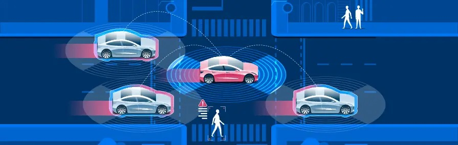

Quando o assunto são os tipos de automóveis que existirão no futuro, a categoria que mais se destaca são a dos carros autônomos. Carros autônomos deixaram de ser algo que era do futuro para virar realidade. Isso é o que observamos no mercado de carros e o foco das montadoras sobre o futuro dos carros autônomos.

Mas afinal de contas, o que é um carro autônomo?
Carros autônomos são veículos projetados para se deslocar e executar tarefas de direção sem a necessidade de um condutor humano, utilizando uma combinação de sensores (câmeras, radares e LIDAR), inteligência artificial e sistemas de controle computacional.
Níveis de Autonomia
A autonomia dos veículos podem ser classificadas em 6 níveis:
| Nível | Descrição da Autonomia |
|---|---|
| Nível 0 | Veículos controlados manualmente. |
| Nível 1 | Assistência ao motorista. O motorista realiza grande parte das tarefas, enquanto o automóvel serve como um assistente que automatiza tarefas simples. |
| Nível 2 | Caracterizada pela direção parcialmente automática. A automação já começa a aparecer de fato. O motorista ainda é responsável pela condução do veículo. |
| Nível 3 | Direção altamente automatizada. Sensores mais avançados fazem parte dessa categoria. Entretanto, sua aceleração é limitada e ele precisa de reposta do motorista para realizar tarefas de trocar de faixa. |
| Nível 4 | Automação parcialmente completa. Aqui o veículo já pode trafegar por conta própria durante maior parte do percurso e pode realizar manobras por contra própria. Contudo, sua área de atuação é mapeada e limitada, e o veículo não pode atingir altas velocidades. |
| Nível 5 | Automação completa. Não é necessário mais um motorista, todos no carro podem desfrutar da viagem com conforto dos passageiros. |